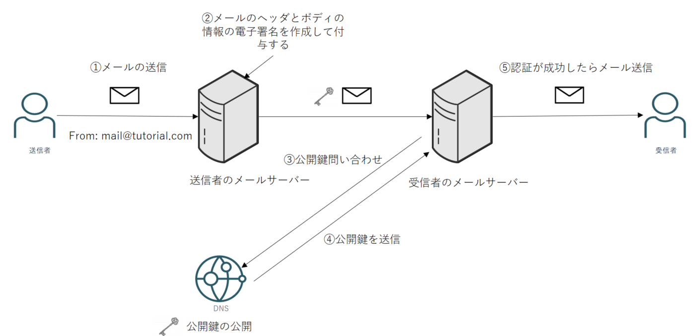
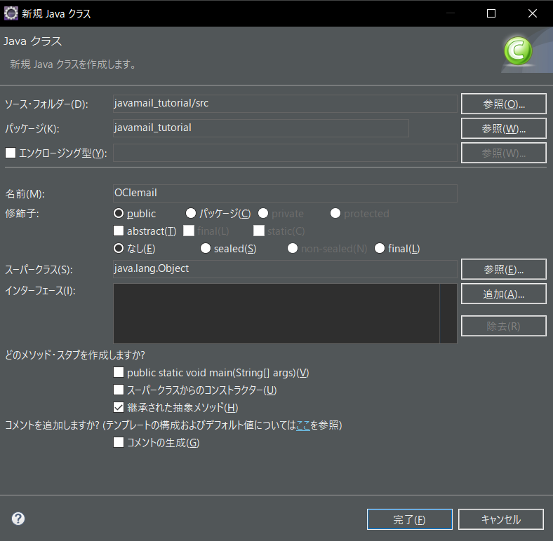

チュートリアル一覧に戻る : Oracle Cloud Infrastructure チュートリアル
OCIのEmail Deliveryサービスを使用することにより、電子メールを受信者へ簡単に一括配信できます。またSPFやDKIMを設定をすることにより、送信元を偽装するなりすましメールを対策して、メールの到達可能性を向上させることができます。
今回のチュートリアルではSMTP認証を設定してMailxでメールを送信します。

所要時間： 約40分
前提条件：
- その2 - クラウドに仮想ネットワーク(VCN)を作る を通じて仮想クラウド・ネットワーク(VCN)の作成が完了していること
- その3 - インスタンスを作成する（今回のチュートリアルではOracle Linuxインスタンス7.9を使用しています）
- Javaがインストールされていること（今回のチュートリアルではJava 17で実施しています）
- Eclipse IDEがインストールされていて使用できる状態であること（今回のチュートリアルではEclipse 2021で実施しています）
注意:
- チュートリアル内の画面ショットについてはOracle Cloud Infrastructureの現在のコンソール画面と異なっている場合があります
- 前提条件の3,4はJavaMailからメール送信を行う際に必要になります
1. 電子メールの概要
電子メールを送信すると、送信者側のメールサーバー、相手側のメールサーバーを経由して受信者にメールが届きます。メールを送信してから受信者のメールサーバーに届くまでの通信にSMTPのプロトコルが使用されています。
電子メールは「メールヘッダ」、「エンべロープ」そして「メール本文」の3つから構成されています。GmailやOutlook等のメールソフトでメールを送受信する際に送信元や宛先等が見えるかと思いますが、これはメールヘッダに当たります。実際にSMTPサーバーが利用するのはメールヘッダの情報ではなくエンベロープの情報になります。ヘッダー情報とエンベロープ情報が違ってもメールを送信できることから、ヘッダーを偽造してなりすましメールを送ることができてしまいます。
このようななりすましメールを対策するために今回の基礎編のチュートリアルSMTP認証を、そして応用編ではSPFとDKIMの設定をします。
-
SMTP認証 - メール送信者がユーザーであるかを確認する認証方法です。メールを送信する際にユーザー名とパスワードがないと送れないシステムになります。
-
SPF - 送信ドメイン認証の1つで、事前に送信側のメールサーバーのIPアドレスもしくはSPFレコードをDNSサーバーに登録しておきます。そしてメールが送信された際に受信サーバーはDNSサーバーに対して送信元ドメインに対するSPFレコードを問い合わせして、返ってきたSPFレコードと送信元IPアドレスが一致するか確認します。そして情報が一致した時のみ受信者にメールが届きます。

- DKIM - 送信ドメイン認証の1つで、DKIMでは電子署名を使用します。DNSサーバー側には公開鍵を公開しておきます。メールを送信する際にメールのヘッダとボディの情報の電子署名を追加しておきます。受信者のメールサーバーはDNSから公開鍵を入手して公開鍵で電子署名を検証します。検証が成功すれば受信者にメールが送られます。

2. SMTP資格証明の生成
Email Deliveryサービスを使用するにはSMTP資格証明書の設定が必要になります。各ユーザー最大2つまで設定することができて、3つ以上作成する場合はユーザーを追加する必要があります。
-
コンソールの右上にある人のマークをクリックして、
ユーザー設定を選択します。 -
するとユーザーの詳細画面が表示されるので、スクロールして左下の
SMTP資格証明をクリックします。 -
SMTP資格証明の作成を行います。
説明- チュートリアル用
-
SMTP資格証明の作成のボタンを押すと、SMTP送信用のユーザー名(ユーザーのOCID)とパスワードが表示されます。パスワードは1回しか表示されないので、テキストエディタ等に書いておいてください。そのあと閉じるを押してください。
3. 承認済み送信者の作成
-
左上のメニューから
開発者サービス → 電子メール配信をクリックします。そして左側にあるApproved Sendersを押します。 -
承認済み送信者の作成をクリックして以下の設定を行います。
-
電子メール・アドレス- mail@tutorial.com

Note
承認済送信者はリージョン単位のものであり、たとえ同じメールアドレスであってもリージョンが異なる場合は他のリージョンでも設定する必要があります。
4. Mailxでメール送信
実際にメールを送信します。今回のチュートリアルでは簡単に実装できるMailxコマンドを利用します。
-
メールを配信するのに必要な
SMTPエンドポイントを確認します。開発者サービス → 電子メール配信をクリックするとSMTP送信情報が表示され、パブリック・エンドポイントの箇所をテキストエディタ等に書いてください。もしくはこちらから確認することも出来ます。Note
今回のチュートリアルの場合はエンドポイントが東京リージョンのため SMTPエンドポイントはsmtp.email.ap-tokyo-1.oci.oraclecloud.com:578になります -
Oracle Linuxにssh接続をして、Malixがインストールされているか確認します。
yum list installed | grep mailxもしインストールされていなかったら以下のコマンドを実行してください。
sudo yum install mailx -
/etc/mail.rcにあるファイルを編集します。そして以下を追記します。sudo vi /etc/mail.rc追記する内容
#smtp config set nss-config-dir=/etc/pki/nssdb/ set smtp-use-starttls set smtp-auth=plain set smtp=<SMTPエンドポイント>:587 set from=<承認済送信者> set smtp-auth-user=<SMTP送信用のユーザー名(ユーザーOCID)> set smtp-auth-password=<SMTPパスワード>Note
smtp-auth-userには、2.SMTP資格証明の作成 で表示されたSMTP送信用のユーザー名(ユーザーのOCIDと同一)を使用してください。OCIコンソールのユーザー名を使用すると認証に失敗します -
malixを使用してメールを送信します。送信先のメールアドレスを適宜書き換えてコマンドを以下のコマンドを入力します。
echo "Malixを使用したメール送信" | mailx -s "テストメール" ＜送信先のメールアドレス＞ -
メールが届いているか確認します。メールが届いていない場合は
/var/log/maillogを確認してください。メールが送信されている場合はstatus=sent (250 Ok)と表示されます。Note
SPFやDKIMを設定していないためスパムと判定されて迷惑メールに振り分けられている可能性があります。
5. おまけ
1. Malixを利用した際にエラーが発生した場合
Malixでメール配信した際に Error in certificate: Peer's certificate issuer is not recognized のエラーが発生した場合は、CA証明書がコネクタの証明書データベースに追加されていないことが原因の可能性があります。
-
CA証明書が証明書データベースに証明書が格納されているかを確認します。
sudo certutil -L -d /etc/pki/nssdb/すると以下のように表示され、Certificate Nicknameの下に何も表示されていないので証明書がないことが分かります。
Certificate Nickname Trust Attributes SSL,S/MIME,JAR/XPI - 次に証明書チェーンの情報を確認します。
echo | openssl s_client -starttls smtp -crlf -connect <SMTPエンドポイント>:587 -showcertsするとルート証明書(C = US, O = DigiCert Inc, OU = www.digicert.com, CN = DigiCert Global Root G2 verify return:1)がないことが確認できます。
depth=2 C = US, O = DigiCert Inc, OU = www.digicert.com, CN = DigiCert Global Root G2 verify return:1 depth=1 C = US, O = DigiCert Inc, CN = DigiCert Global G2 TLS RSA SHA256 2020 CA1 verify return:1 depth=0 C = US, ST = California, L = Redwood City, O = Oracle Corporation, CN = smtp.email.ap-tokyo-1.oci.oraclecloud.com verify return:1 --- Certificate chain 0 s:/C=US/ST=California/L=Redwood City/O=Oracle Corporation/CN=smtp.email.ap-tokyo-1.oci.oraclecloud.com i:/C=US/O=DigiCert Inc/CN=DigiCert Global G2 TLS RSA SHA256 2020 CA1 -----BEGIN CERTIFICATE----- -----END CERTIFICATE----- 1 s:/C=US/O=DigiCert Inc/CN=DigiCert Global G2 TLS RSA SHA256 2020 CA1 i:/C=US/O=DigiCert Inc/OU=www.digicert.com/CN=DigiCert Global Root G2 -----BEGIN CERTIFICATE----- -----END CERTIFICATE----- ---- -
DigiCert Global Root G2をインポートします。digicertのサイトから
DigiCert Global Root G2をダウンロードします。wget https://cacerts.digicert.com/DigiCertGlobalRootG2.crt.pem -
ルート証明書を証明書データーベースにインストールします。
sudo certutil -A -t "C,," -n "DigiCert Global Root G2" -d /etc/pki/nssdb/ -i DigiCertGlobalRootG2.crt.pem -
もう一度
/etc/pki/nssdb/にある証明書のデータベースを確認します。sudo certutil -L -d /etc/pki/nssdb/すると証明書データベースに証明書があると確認できます。確認できたら再度Mailxからメールを送信してみてください。
Certificate Nickname Trust Attributes SSL,S/MIME,JAR/XPI DigiCert Global Root G2 C,,
2. Postfixによるメール送信
Postfixはメール転送エージェント（MTA）に分類されてSendmailと互換性があり、セキュリティが優れていることで知られています。
-
事前に作成してあるOracle Linuxインスタンスにログインします。そしてPostfixがインストールされているか下記のコマンドを打って確認します。
yum list installed | grep postfixNote
Oracle Linux8を使用している場合はPostfixがインストールされていない可能性があるのでこちらを参照してください -
/etc/postfix/main.cfのファイルを更新します。sudo vi /etc/postfix/main.cf追記する内容
#smtp config smtp_tls_security_level = may smtp_sasl_auth_enable = yes smtp_sasl_password_maps = hash:/etc/postfix/sasl_passwd smtp_sasl_security_options = relayhost = <SMTPエンドポイント> -
main.cfと同じディレクトリにファイルsasl_passwdを作ります。sudo vi /etc/postfix/sasl_passwd -
sasl_passwdに以下の情報を書きます。<SMTPエンドポイント>:587 <SMTPユーザー名>:<SMTPパスワード> -
他のユーザーから見えないようにSMTPパスワード等を記述した
sasl_passwdの権限・所有者を変更します。sudo chown root:root /etc/postfix/sasl_passwd && sudo chmod 600 /etc/postfix/sasl_passwd -
パスワード・ハッシュを生成します。
sudo postmap hash:/etc/postfix/sasl_passwd -
Postfixをリロードします。下記のコマンドを入力します。コマンドを打った際に
refreshing the Postfix mail systemと表示されたらリロードできています。sudo postfix reloadnote
もしPostfixが動いていないというthe Postfix mail system is not runningエラーが表示されたらPostfixを起動させるsudo postfix startのコマンドを実行してください。 -
メールを送信します。
echo "This is a test" | mail -s "Test" -r <承認済送信者> <送信先メールアドレス> -
メールが届いているか確認します。メールが届いていない場合は
/var/log/maillogを確認してください。メールが送信されている場合はstatus=sent (250 Ok)と表示されます。Note
SPFやDKIMを設定していないためスパムと判定されて迷惑メールに振り分けられている可能性があります。
3. JavaMailによるメール送信
JavaMailはJavaでメールを送信する際に利用されるAPIです。 今回のチュートリアルではEclipseとJavaMail APIを使用して電子メールを送信します。
-
javax.mailを使用します。こちらから最新版のJavaMail(今回の場合はJavaMail1.6.2)をダウンロードします。

-
Java.activationをダウンロードします。こちらから
JavaBeans Activation Framework 1.1.1のZipファイルをダウンロードして解凍してください。 -
Eclipseを開きます。そして
ファイル → 新規をクリックしてJava プロジェクトを開き以下の設定を行います。プロジェクト名- javamail_tutorialJRE- JavaSE-17 (Javaのバージョンに合わせて適宜設定してください)プロジェクト・レイアウト- ソースおよびクラス・ファイルのフォルダーを個別に作成ワーキングセット- なしモジュール- なし

-
次へを押して、Java設定を行います。左から3番目にライブラリーをクリックして、クラスパス → 外部JARの追加のボタンを押します。Javax.mailとjava.activationを追加します。外部JARの追加追加すると下記のようになります。追加できたら、完了を押してください。
-
作成したJavaプロジェクトにクラスを作成します。右クリックをして、
新規 → クラスを選択します。
-
そして名前の箇所を入力します。それ以外はデフォルトの設定にします。名前の箇所を入力したら
完了ボタンを押します。名前- OCIemail

-
package javamail_tutorial;の下に以下のコードを貼り付けます。承認済み送信者、受信者のメールアドレス、SMTPユーザー名、SMTPパスワードとSMTPエンドポイントを必ず書き換えてください。import java.util.Properties; import javax.mail.Message; import javax.mail.Session; import javax.mail.Transport; import javax.mail.internet.InternetAddress; import javax.mail.internet.MimeMessage; public class OCIemail { // Replace FROM with your "From" address. // This address must be added to Approved Senders in the console. static final String FROM = "<承認済み送信者>"; static final String FROMNAME = "<sender name>"; // Replace TO with a recipient address. static final String TO = "<受信者のメールアドレス>"; // Replace smtp_username with your Oracle Cloud Infrastructure SMTP username generated in console. static final String SMTP_USERNAME = "<SMTPユーザー名>"; // Replace smtp_password with your Oracle Cloud Infrastructure SMTP password generated in console. static final String SMTP_PASSWORD = "<SMTPパスワード>"; // Oracle Cloud Infrastructure Email Delivery hostname. static final String HOST = "<SMTPエンドポイント>"; // The port you will connect to on the SMTP endpoint. Port 25 or 587 is allowed. static final int PORT = 587; static final String SUBJECT = "<subject of your email>"; static final String BODY = String.join( System.getProperty("line.separator"), "<h1>Email Delivery test</h1>", "<p>This email was sent with OCI Email Delivery</p> ", ); public static void main(String[] args) throws Exception { // Create a Properties object to contain connection configuration information. Properties props = System.getProperties(); props.put("mail.transport.protocol", "smtp"); props.put("mail.smtp.port", PORT); //props.put("mail.smtp.ssl.enable", "true"); //the default value is false if not set props.put("mail.smtp.auth", "true"); props.put("mail.smtp.auth.login.disable", "true"); //the default authorization order is "LOGIN PLAIN DIGEST-MD5 NTLM". 'LOGIN' must be disabled since Email Delivery authorizes as 'PLAIN' props.put("mail.smtp.starttls.enable", "true"); //TLSv1.2 is required props.put("mail.smtp.starttls.required", "true"); //Oracle Cloud Infrastructure required // Create a Session object to represent a mail session with the specified properties. Session session = Session.getDefaultInstance(props); // Create a message with the specified information. MimeMessage msg = new MimeMessage(session); msg.setFrom(new InternetAddress(FROM,FROMNAME)); msg.setRecipient(Message.RecipientType.TO, new InternetAddress(TO)); msg.setSubject(SUBJECT); msg.setContent(BODY,"text/html"); // Create a transport. Transport transport = session.getTransport(); // Send the message. try { System.out.println("Sending Email now...standby..."); // Connect to OCI Email Delivery using the SMTP credentials specified. transport.connect(HOST, SMTP_USERNAME, SMTP_PASSWORD); // Send email. transport.sendMessage(msg, msg.getAllRecipients()); System.out.println("Email sent!"); } catch (Exception ex) { System.out.println("The email was not sent."); System.out.println("Error message: " + ex.getMessage()); } finally { // Close & terminate the connection. transport.close(); } } } -
そして
実行のボタンを押します。 -
メールを送信した際に以下のように
Email sentと書かれていれば、送信できています。メールが届いているか確認してください。
Note
SPFやDKIMを設定していないためスパムと判定されて迷惑メールに振り分けられている可能性があります。
以上で、この章の作業は終了です。SPFやDKIMを設定してメール到達可能性を高めたい場合はEmail Deliveryを利用した外部へのメール送信(応用編)を参照してください。
チュートリアル一覧に戻る : Oracle Cloud Infrastructure チュートリアル